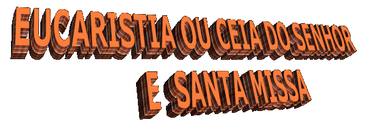
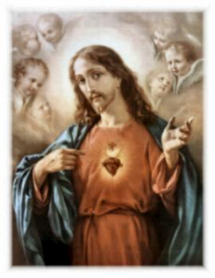
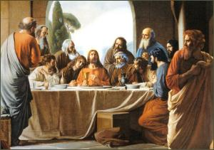
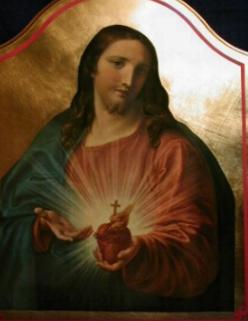

A Eucaristia tem dois importantes significados:
a Sagrada Eucaristia como Comunhão Eucarística, Comunhão Fraterna ou Ceia do
Senhor, alimento espiritual que revigora, inspira e impulsiona a vida da humanidade,
e também, como Ação de Graças, sendo denominada de Santa Eucaristia
ou Santa Missa. Na verdade a palavra Eucaristia tem o significado de
“ação de graças a Deus”.
Eucarística, Comunhão Fraterna ou Ceia do
Senhor, alimento espiritual que revigora, inspira e impulsiona a vida da humanidade,
e também, como Ação de Graças, sendo denominada de Santa Eucaristia
ou Santa Missa. Na verdade a palavra Eucaristia tem o significado de
“ação de graças a Deus”.
Como Ação de Graças, a Santa Eucaristia ou
Santa Missa é o memorial da Paixão, Morte e Gloriosa Ressurreição de Nosso Senhor
Jesus Cristo.
“A Páscoa dos Judeus”.
Deus criou tudo o que existe numa
manifestação espontânea e misericordiosa de seu incomensurável e infinito Amor.
Ele criou a humanidade a sua imagem e semelhança, dotando-a de inteligência
e dons especiais. Todavia no primeiro teste de fidelidade os nossos primeiros pais
sucumbiram sob a ação da tentação do maligno, cometendo o Primeiro Pecado, um
Pecado de Desobediência e de Soberba. O Livro do Genesis da Sagrada Escritura
descreve o primeiro pecado e os pecados que logo se sucederam, mostrando que a
humanidade foi infiel ao Criador, caindo na escravidão do inimigo e perdendo a
amizade de Deus.
Todavia, o Senhor não deixou de manifestar
a sua ilimitada Bondade, prometeu que viria Alguém que podia vencer o inimigo e
restabelecer a amizade entre as criaturas e o Criador. Este fato do estabelecimento
de um novo pacto de amizade entre Deus e a humanidade, foi prefigurado na
história do povo escolhido.
A certa altura dos acontecimentos, o povo
de Israel vivia uma situação de escravidão e sofrimento no Egito. Então, Deus se
manifestou visivelmente, libertando o povo da escravidão e o conduziu através do
Mar Vermelho e pelo deserto, até a Terra Prometida.
Como lembrança, os judeus criaram a Festa
em homenagem a este fato, constituindo a Páscoa Judaica, com o significado que
marcava a passagem do povo de Israel da escravidão para a liberdade, conduzido
pela mão poderosa de Deus.
Fazendo parte dos festejos da Páscoa os judeus
também comemoram um segundo acontecimento importante, na caminhada pelo deserto
à Terra Prometida: foi à chegada ao Monte Sinai, onde Moisés recebeu as tábuas
da Lei.
Então, todos os anos, na época da Páscoa os
piedosos judeus celebravam por ordem de Deus os dois acontecimentos. Com o rito
da imolação do cordeiro e os pães ázimos, eles recordavam o grande acontecimento
da libertação do Egito e da Aliança no Sinai, assim como a entrada na Terra
Prometida.
Dessa forma, teríamos então o seguinte
esquema para a comemoração do Rito da Páscoa Judaica:
O pão ázimo, sem fermento, pela ação
de graças, comemora a páscoa da libertação do Egito. O cálice, pela ação de
graças, comemora a páscoa da Aliança do Sinai.
Não devemos esquecer que o rito não
era uma mera lembrança dos fatos acontecidos, mas uma renovação e uma
representação. Eles recordavam o passado, a libertação do povo que estava
escravizado no Egito e a aliança com Deus.
Contudo, é importante mencionar, que em
cada festa da Páscoa Judaica, os hebreus esperavam que acontecesse uma Nova
Aliança com Deus. Eles esperavam a expansão do Reino de Javé não só sobre os
israelitas, mas sobre todo o mundo. Esperavam mesmo que o Messias devia ser um
grande guerreiro, poderoso e forte, que viesse durante a celebração da Páscoa. A
Sagrada Escritura relata que os Profetas e Mensageiros Divinos pregavam com
ênfase sobre o tão esperado acontecimento.
“Jesus, a Páscoa Verdadeira”.
Na plenitude dos tempos Deus não falou mais
pelos Profetas e Mensageiros, Ele
mesmo veio na Pessoa de seu Filho: “o Verbo se fez carne e habitou entre nós”. (Jo 1, 14)
Ele não veio abolir o Antigo Testamento e nem
interromper o Plano Divino de Salvação estabelecido no Sinai. Veio completá-lo,
realizando-o plenamente.
O Novo Testamento descreve de modo inquestionável
e brilhante a extraordinária Obra do Senhor.
Assim, a morte e ressurreição de Cristo são a
verdadeira Páscoa, que liberta a humanidade do pecado, reconciliando-a com Deus,
realizando assim a Nova e Eterna Aliança do Senhor com todas as gerações.
A descrição da Última Ceia feita por São Lucas (Lc
22,14-18), nos revela que Jesus começou a Ceia celebrando a Páscoa Judaica, sem
contudo dar-lhe um realce especial. No momento oportuno Ele instituiu o novo
rito, mandando que fosse renovado em sua memória:
“Tomando o pão, deu graças,
partiu-o e lhes deu, dizendo: Isto é o meu Corpo, que é dado por vós; fazei isto em memória
de Mim”. Do mesmo modo tomou também o cálice, depois de cear, dizendo: “Este
Cálice é a Nova Aliança em Meu Sangue, que é derramado em favor de vós”. (Lc 22, 19-20)
Cristo é o Cordeiro de Deus que tira o pecado do
mundo, a ser imolado para servir de alimento e de sinal da verdadeira passagem
de Deus entre nós, pela qual se realizou a libertação do gênero humano.
Existe, porém, uma diferença essencial. Outrora
o povo judeu era aspergido com o sangue do cordeiro, ao passo que Jesus sendo à
vítima perfeita, Ele dá de beber o seu próprio sangue, pois por sua morte não
somos apenas lavados dos nossos muitos pecados, mas fomos constituídos em
verdadeiro povo de Deus, revestidos do poder sacerdotal do próprio Cristo.
Portanto, para perpetuar sua passagem pelo mundo,
para que a humanidade de todos os tempos pudesse participar de sua Divina Obra,
Jesus instituiu o novo rito, a nova Páscoa, a Páscoa Cristã, com as palavras:
“Fazei isto em memória de
Mim”. (Lc 22, 19) Ou segundo São Paulo: “Pois todas as vezes que comerdes este pão e beberdes
deste cálice, vós anunciarão a morte do Senhor até que Ele venha”. (1 Cor 11, 26)
Por esta memória objetiva realizada sob os
sinais sacramentais do pão e do vinho, sempre se torna presente o Mistério da Paixão,
Morte e Gloriosa Ressurreição do Senhor, para que todos que crêem possam
participar deste Mistério. Pela memória, a Igreja faz o que Jesus fez, isto é,
dá graças a Deus sobre o pão e o vinho pelo Plano de Salvação da humanidade e
pela Obra maravilhosa do Criador, realizando desta forma com Cristo a passagem
deste mundo para o Pai Eterno.
“Comunhão Eucarística
ou Ceia do Senhor”.
Como Sagrada Comunhão a Eucaristia celebra-se
em forma de ceia, do mesmo modo
como Jesus fez antes de ser entregue. Esta forma
Ele a transmitiu à Igreja para que fosse repetido em memória de sua morte e
ressurreição. O Concílio Vaticano II diz:
“A Eucaristia é o memorial
de sua Morte e Ressurreição, sacramento de piedade, sinal de unidade, vinculo de
caridade, banquete pascal, em que Cristo nos é comunicado em alimento, o espírito é
repleto de graça e nos é comunicado o penhor da futura glória”.
Então, a Sagrada Comunhão é o Sacramento
instituído pelo Senhor na noite da Quinta-feira Santa, durante a Última Ceia que
realizou em companhia dos Apóstolos, no Cenáculo, em Jerusalém. Jesus ordenou:
“Fazei isto em memória de Mim”. (Lc 22, 19)
Cristo, a vítima perfeita, se ofereceu a
Si Mesmo ao Pai Eterno, morrendo crucificado entre dois ladrões. Seu precioso
Sangue derramado na Cruz lavou a alma de todas as gerações, infundiu na humanidade
a graça santificante através dos Sacramentos e consolou o Criador por causa do
Pecado Original e dos Pecados Subsequentes. Na Santa Missa acontece exatamente
a repetição do drama do Calvário, mas sem derramamento de sangue. No momento da
Consagração, na Santa Missa, sob a ação do Espírito Santo, acontece o fenômeno
sobrenatural da “transubstanciação”
, o pão e o vinho são transformados no Corpo, Sangue, Alma e
Divindade de Nosso Senhor Jesus Cristo, permanecendo o mesmo aspecto
externo das espécies de pão e vinho.
Significa dizer que a Sagrada Eucaristia, ou
Santíssimo Sacramento, é o próprio Jesus em Corpo, Sangue, Alma e Divindade, que
em ação de graças, durante a Comunhão, Ele mesmo se dá na menor fração da Hóstia
Consagrada, como comida e bebida espiritual, para a salvação da humanidade.
“A Eucaristia representa”:
- O permanente Sacrifício da Nova Lei,
mantendo viva a Aliança que Deus fez com toda humanidade.
- É alimento espiritual para a nossa alma.
- É uma perpétua comemoração da Paixão,
Morte e Gloriosa Ressurreição do Senhor Jesus.
- É um testemunho do verdadeiro e infinito
Amor de Deus por todos nós.
- É garantia, é penhor de vida eterna. Jesus
disse: “Quem come a Minha Carne e bebe
o Meu Sangue permanece em Mim e Eu nele”. (Jo 6, 56)
“São três os aspectos
fundamentais que acontecem na Celebração de uma Santa Missa”:
a)
A presença real e verdadeira do Senhor.
b)
O memorial do Sacrifício de Cristo e da Igreja.
c)
A Comunhão com Cristo e os irmãos.
“A Primeira Eucaristia”:
Para os Adultos, a preparação é feita em
conjunto com a catequese para a recepção dos Sacramentos do Batismo e da Crisma,
na mesma cerimônia. A duração da catequese pode ser de um ou mais anos, de
acordo com as normas Diocesanas. Para a Primeira Eucaristia das Crianças,
é necessário que elas sejam Batizadas e que tenham recebido a catequese
apropriada na Paróquia que frequentam.
“Receber dignamente
Jesus Sacramentado”:
Deve existir nos fieis uma necessária
preocupação em se preparar intimamente para
receber Jesus Sacramentado durante
a Santa Missa. É necessário que o fiel esteja em “estado de graça”, ou seja, esteja perdoado e
arrependido de todos os seus pecados e transgressões, para receber com
dignidade o Santíssimo Sacramento.
No caso do Batismo, o Sacramento
é forte e tem o poder dado por Jesus, para perdoar e apagar todos os pecados
cometidos anteriormente pelo batizando, até aquele dia (caso dos Adultos). Mas
se o Jovem ou Adulto já estão Batizados, para receberem a Primeira Eucaristia
eles devem, como bons cristãos, compreenderem a necessidade imperiosa de
uma cuidadosa preparação, inclusive procurando o Sacramento da Penitência
ou Confissão, se for o caso, de forma a se confessar com o sacerdote e se
arrepender e se penitenciar dos seus pecados, alcançando do Espírito Santo
de Deus, através das orações do sacerdote, o perdão Divino, e o consequente
“estado de graça”,
necessário e imprescindível para receber Jesus, com respeito e amor na
Sagrada Comunhão.
Não se compreende e não existe outro
meio para receber o Senhor Deus com honestidade, devidamente arrependido
e penitenciado de todas as culpas.
O fato de uma pessoa receber na Santa Missa
a Sagrada Comunhão, sem estar devidamente arrependida de seus pecados, sem
estabelecer íntimamente o firme propósito de não mais cometê-los, ela não se
encontra em “estado de graça”
, e por isso mesmo, constitui uma transgressão gravíssima que
deve ser evitada. Explicando melhor, existem pessoas que, para satisfazerem
sua vaidade pessoal, ou para se justificarem exteriormente perante os parentes,
amigos e conhecidos, ou as vezes, querendo passar uma impressão de piedosa
ou devota praticante e fiel, entram na fila e recebem a Sagrada Comunhão
sem a devida e necessaria preparação anterior; isto é um verdadeiro sacrilégio.
Na verdade elas só recebem uma partícula de trigo e água e não o Senhor na
Sagrada Eucaristia. Isto porque, sem estar preparada, ela está se iludindo
a si própria, na verdade não conseguirá receber Jesus Sacramentado, o Divino
Espírito Santo não permitirá em hipótese nenhuma, que pessoas que não
estejam preparadas recebam Deus.
Sendo este um assunto muito sério, que
envolve a paz espiritual e a própria vida das pessoas, deve ser meditado e analisado
criteriosamente por todos os fieis que amam o Senhor, porque não pode e não deve
existir uma vulgarização do Sacramento da Eucaristia, mesmo que seja involuntária,
lembrando que a Sagrada Comunhão é o próprio Deus, é Jesus real e presente,
em Corpo Sangue, Alma e Divindade, sob a espécie de pão e vinho, que está
disponível em todos os sacrários para a vida do mundo. Lembre-se, cometer um
pecado contra a Sagrada Eucaristia é buscar a própria condenação eterna.

 Próxima Página
Próxima Página
Página Anterior
Retorna ao Índice